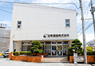

About Chuko Distillery
Greeting
Our company was originally named Tomigusuku Distillery and founded by Chuko Oshiro in Tomigusuku city located next to Naha city in 1949. Later in 1980, We reorganized our company and changed our name to Chuko Distillery.
With a basic concept of "Succession and Creation of Awamori Culture", we have worked hard and pursued a new possibility of Awamori. Our mottoes are "Learn, Listen, Create, and Challenge".
In 1989, We invented a pottery suitable for Awamori maturation, which is called Chuko Original Kiln Fired Pottery.
When we learned that the Southeast Asian Pottery was suitable for Awamori maturation, Sigeru Oshiro, the former president and incumbent chairman, conducted a research and spinned a potter's wheel himself hoping to create a modern Awamori culture for Okinawa.
By learning from the culture of our past when we had Ryukyu Kingdom, our goal is to create a new Okinawa value which we can be proud of in this modern society through this Awamori culture.
We have sent our passion and messages of Awamori mostly to the people in Okinawa only until now.
We are going to expand our targeted area in and out of Okinawa and spread Awamori culture until you hear and know "Ryukyu Awamori", hoping we can contribute to not only our community but also to the whole Japan, and to the world.
Our challenge to the next stage has just begun.
Chuko Shuzo Corp.
CEO Tsutomu Oshiro
- Founded
- Founded in 1949
- Head Office
-

132 Nakachi Tomigusuku City Okinawa 901-0235 Japan
TEL：098-850-1257 FAX：098-850-1204 - Tokyo Office
- 3-6-4 Konan Minato Ku Tokyo 108-0075 Japan
TEL：03-5460-3327 FAX：03-5460-3397 - Capital Fund
- 41 million Yen
- Employees
- 48 people（including regular part-time workers ）